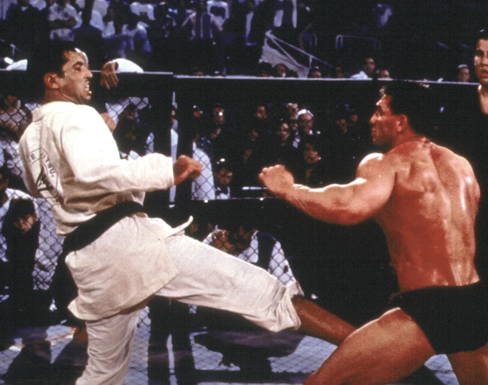
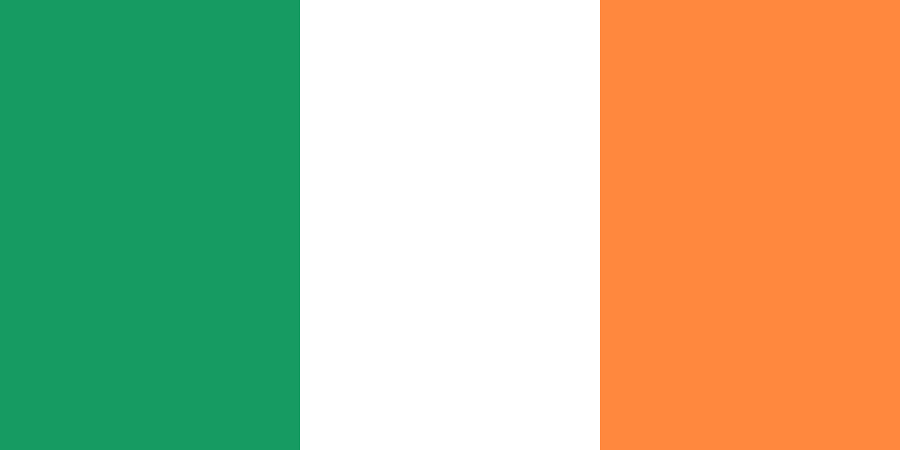

Bienvenidos al salón de la fama del Ultimate Fighting Championship
Bienvenidos al Salón de la Fama de UFC, el lugar donde la historia del combate se honra y la grandeza perdura. Aquí celebramos a los guerreros que dieron forma al deporte de las artes marciales mixtas, dejando todo dentro del octágono y marcando un antes y un después con cada victoria, cada desafío y cada legado. Este espacio está dedicado a quienes trascendieron más allá de las estadísticas, convirtiéndose en leyendas por su valentía, habilidad y espíritu indomable. Cada miembro del Salón de la Fama representa la evolución de un deporte que hoy une estilos, culturas y pasiones en todo el mundo. Muchos fueron pioneros en sus estilos, abriendo el camino cuando las reglas aún estaban en formación. Otros marcaron épocas por su dominio absoluto, su capacidad para reinventarse y su impacto más allá de la jaula. Algunos nos regalaron rivalidades inolvidables, regresos épicos y victorias que trascendieron generaciones. Cada uno de ellos dejó una marca única en la historia de la UFC y elevó el nivel de lo que significa competir al más alto nivel. El Salón de la Fama no solo reconoce sus logros deportivos, sino también el legado humano, cultural y emocional que dejaron en millones de seguidores en todo el mundo. Te invitamos a descubrir este recorrido por la historia viva del combate, donde la disciplina, el respeto y la pasión se convierten en eternidad.
- Nombre: Jon Jones
-
País: Estados Unidos

- Categoria: 205 lb - 265 lb
- Altura: 193 cm
- Record: 28 - 1
- Palmares: Bi campéon 205 - Campéon interino 205 - Campeón 265
Jon Jones es un peleador profesional de artes marciales mixtas (MMA) estadounidense, considerado por muchos como el mejor luchador en la historia del deporte. Nacido el 19 de julio de 1987 en Rochester, Nueva York, Jones se destacó rápidamente en la UFC (Ultimate Fighting Championship) por su estilo versátil, alcance excepcional y capacidad para adaptarse a cualquier oponente. Se convirtió en el campeón más joven en la historia de la UFC al ganar el título semipesado (205) en 2011, y desde entonces ha mantenido un dominio casi absoluto en la división, convirtiendose el hombre mas letal del mundo dentro de la jaula. A lo largo de su carrera, ha vencido a numerosos excampeones y contendientes de alto nivel, demostrando una combinación única de técnica, inteligencia y fuerza física. En 2023, hizo un exitoso regreso en la categoría de peso pesado, reafirmando su estatus como el más grandes de todos los tiempos.
- Nombre: George St-Pierre
-
País: Canada

- Categoria: 170 lb - 185 lb
- Altura: 178 cm
- Record: 26 - 2
- Palmares: Bi campéon 170 - Campéon interino 170 - Campeón 185
Georges St-Pierre, también conocido como "GSP", es un expeleador canadiense de artes marciales mixtas ampliamente reconocido como uno de los mejores competidores en la historia de la UFC. Nacido el 19 de mayo de 1981 en Saint-Isidore, Quebec, St-Pierre se destacó por su disciplina, ética de trabajo y habilidades técnicas en múltiples disciplinas como el karate, lucha, boxeo y jiu-jitsu brasileño. Fue campeón mundial en la división de peso wélter (170) durante varios años y realizó exitosas defensas del título frente a algunos de los oponentes más duros de su era. Además, en 2017, regresó tras un retiro de cuatro años para ganar el campeonato de peso mediano (185). Conocido tanto por su comportamiento respetuoso como por su inteligencia dentro y fuera del octágono, GSP es admirado no solo por sus logros deportivos, sino también por su papel como embajador del deporte y ejemplo de profesionalismo.

- Nombre: Connor McGregor
- País: 
- Categoria: 145 lb - 155 lb - 170 lb
- Altura: 173 cm
- Record: 22 - 6
- Palmares: Campéon 145 - Campéon interino 145 - Campéon 155 - Campéon simultaneo 145/155
Conor McGregor es un peleador irlandés de artes marciales mixtas conocido por su explosivo estilo de combate, carisma y personalidad provocadora, que lo convirtieron en una de las mayores estrellas en la historia de la UFC. Nacido el 14 de julio de 1988 en Dublín, Irlanda, McGregor se abrió camino desde orígenes humildes hasta convertirse en una figura global del deporte. Se destacó por su poderosa pegada y precisión, y en 2015 hizo historia al convertirse en el primer luchador en la UFC en ser campeón simultáneo en dos divisiones (145 - 155). Además de su impacto dentro del octágono, su habilidad para generar atención mediática y promocionar peleas le dio un papel fundamental en el crecimiento comercial de la UFC. Aunque su carrera ha estado marcada por altibajos, lesiones y controversias fuera del deporte, su legado como uno de los peleadores más influyentes y populares de la era moderna es indiscutible.
- Nombre: Khabib Nurmagomedov
-
País: Rusia

- Categoria: 155 lb
- Altura: 178 cm
- Record: 29 - 0
- Palmares: Campéon 155
Khabib Nurmagomedov es un excampeón ruso de artes marciales mixtas, ampliamente reconocido por su dominio absoluto en el octágono y su invicto récord profesional de 29 victorias y 0 derrotas. Nacido el 20 de septiembre de 1988 en la región de Daguestán, Rusia, Khabib se formó desde temprana edad en lucha sambo y judo bajo la guía de su padre y entrenador, Abdulmanap Nurmagomedov. Se hizo famoso por su estilo de combate basado en una lucha implacable, control en el suelo y resistencia física, que le permitió superar con contundencia a algunos de los nombres más importantes de la división de peso ligero (155), incluyendo a Conor McGregor, Dustin Poirier y Justin Gaethje. En 2020, tras la muerte de su padre y mentor, Khabib anunció su retiro invicto, dejando vacante el título y consolidando su legado como uno de los mejores peleadores en la historia de las MMA.

- Nombre: Islam Makhachev
-
País: Rusia
- Categoria: 155 lb
- Altura: 178 cm
- Record: 27 - 1
- Palmares: Campeón 155
Islam Makhachev es un destacado peleador ruso de artes marciales mixtas (MMA), reconocido por su estilo técnico y dominante en la división de peso ligero (155) de la UFC. Nació el 27 de octubre de 1991 en Majachkalá, Daguestán, Rusia. Desde temprana edad, comenzó a entrenar taekwondo y más tarde se especializó en sambo y lucha, disciplinas que han sido fundamentales en su carrera profesional. Makhachev debutó en la UFC en 2015 y rápidamente se destacó por su habilidad para controlar a sus oponentes en el suelo y su precisión en los intercambios de pie. En octubre de 2022, ganó el título de peso ligero (155) al someter a Charles Oliveira en el segundo round. Posteriormente, defendió con éxito su cinturón en varias ocasiones, incluyendo victorias notables sobre Alexander Volkanovski y Dustin Poirier. Su enfoque disciplinado y su estrategia meticulosa lo han consolidado como uno de los luchadores más completos y respetados en la actualidad.

- Nombre: Daniel Cormier
-
País: Estados Unidos
- Categoria: 205 lb - 265 lb
- Altura: 180 cm
- Record: 22 - 3
- Palmares: Campeón 205 - Campeón 265 - Campeón simultaneo 205/265
Daniel Cormier es un expeleador estadounidense de artes marciales mixtas y lucha olímpica. Nacido el 20 de marzo de 1979 en Lafayette, Luisiana, "DC" comenzó su carrera como luchador olímpico, representando a Estados Unidos en los Juegos Olímpicos de Sídney 2000 y Atenas 2004. Más adelante, dio el salto a las MMA, donde se convirtió en uno de los pocos peleadores en la historia de la UFC en ganar títulos en dos divisiones distintas (205 - 265). Reconocido por su habilidad en la lucha, su fuerza física y su inteligencia táctica, Cormier venció a grandes nombres como Anthony Johnson, Alexander Gustafsson, Stipe Miocic y Dan Henderson.

- Nombre: Alexander Volkanovski
-
País: Australia

- Categoria: 145 lb
- Altura: 168 cm
- Record: 27 - 4
- Palmares: Bi campéon 145
Alexander Volkanovski es un peleador profesional australiano de artes marciales mixtas, reconocido por su tenacidad, resistencia y estilo de combate agresivo y técnico. Nacido el 29 de septiembre de 1988 en Shellharbour, Nueva Gales del Sur, Volkanovski alcanzó la cima como campeón mundial de peso pluma (145) en la UFC. A pesar de no tener una estatura imponente para su categoría, su físico compacto, velocidad y poder lo convirtieron en un rival extremadamente difícil de superar. Ha defendido con éxito su cinturón frente a destacados peleadores como Max Holloway, Brian Ortega y Chan Sung Jung, demostrando una combinación letal de presión constante, estrategia y gran capacidad de adaptación. Su ética de trabajo y espíritu competitivo lo han consolidado como el mejor peso pluma (145) de todos los tiempos.

- Nombre: Kamaru Usman
-
País: Nigeria

- Categoria: 170 lb
- Altura: 183 cm
- Record: 20 - 4
- Palmares: Campeón 170
Kamaru Usman es un peleador profesional de artes marciales mixtas nacido el 11 de mayo de 1987 en Auchi, Nigeria, y criado en Estados Unidos, donde desarrolló una destacada carrera como luchador antes de entrar al mundo de las MMA. Es ampliamente conocido por su dominio en la división de peso wélter (170) de la UFC, donde se coronó campeón en 2019 tras vencer a Tyron Woodley y defendió exitosamente su título en múltiples ocasiones contra rivales de alto nivel como Colby Covington, Jorge Masvidal y Gilbert Burns. Usman se caracteriza por su extraordinaria capacidad de lucha, resistencia física y un constante crecimiento en sus habilidades de golpeo, lo que lo llevó a convertirse en uno de los campeones más dominantes de su era.

- Nombre: Israel Adesanya
-
País:
- Categoria: 185 lb - 205 lb
- Altura: 193 cm
- Record: 24 - 5
- Palmares: Bi campéon 185 - Campéon interino 185
Israel Adesanya es un peleador profesional de artes marciales mixtas nacido el 22 de julio de 1989 en Lagos, Nigeria, y criado en Nueva Zelanda, donde desarrolló una destacada carrera en kickboxing antes de dar el salto a la UFC. Conocido como “The Last Stylebender”, Adesanya es célebre por su estilo de pelea creativo, su precisión quirúrgica en el golpeo y su capacidad para leer y neutralizar a sus oponentes. Se convirtió en campeón mundial de peso mediano (185) en 2019 tras vencer a Robert Whittaker y defendió su título en múltiples ocasiones contra algunos de los mejores contendientes de la división, como Paulo Costa, Marvin Vettori y Yoel Romero. Más allá de su talento en el octágono, Adesanya es conocido por su carisma, estilo único y fuerte presencia mediática, consolidándose como una de las figuras más influyentes y populares del deporte.
- Nombre: Anderson Silva
-
País: Brasil

- Categoria: 185 lb
- Altura: 188 cm
- Record: 34 - 11
- Palmares: Campeón 185
Anderson Silva es un legendario peleador brasileño de artes marciales mixtas, ampliamente considerado como uno de los más grandes en la historia del deporte. Nacido el 14 de abril de 1975 en São Paulo, Brasil, Silva se destacó por su estilo de pelea elegante, su extraordinaria precisión en el golpeo y su capacidad para esquivar ataques con movimientos casi imposibles. Fue campeón de peso mediano (185) de la UFC durante más de seis años consecutivos, desde 2006 hasta 2013, logrando la mayor cantidad de defensas exitosas del título en esa categoría. Más allá de sus habilidades técnicas, su creatividad en el octágono y su confianza lo convirtieron en un ícono mundial. Aunque en la etapa final de su carrera enfrentó varias derrotas, su legado como pionero del striking moderno y como inspiración para futuras generaciones de peleadores permanece intacto.
- Nombre: Demetrious Johnson
-
País: Estados Unidos
- Categoria: 125 lb
- Altura: 160 cm
- Record: 25 - 4 - 1
- Palmares: Campeón 125
Demetrious Johnson es un peleador estadounidense de artes marciales mixtas, reconocido como uno de los mejores competidores en la historia de la división de peso mosca (125). Nacido el 13 de agosto de 1986 en Madisonville, Kentucky, Johnson se destacó por su técnica impecable, velocidad excepcional y versatilidad dentro del octágono. Fue campeón de peso mosca (125) de la UFC durante casi cinco años, defendiendo su título en un récord histórico de 11 ocasiones consecutivas, una marca que lo consolidó como uno de los grandes dominadores del deporte. Su estilo combina habilidades de lucha, jiu-jitsu brasileño y striking preciso, lo que le permitió superar a rivales de alto nivel con una mezcla inteligente de estrategia y habilidad técnica.

- Nombre: Stipe Miocic
-
País: Estados Unidos
- Categoria: 265 lb
- Altura: 193 cm
- Record: 20 - 5
- Palmares: Bi campeón 265
Stipe Miocic es un peleador estadounidense de artes marciales mixtas, reconocido como uno de los mejores pesos pesados en la historia de la UFC. Nacido el 19 de agosto de 1982 en Euclid, Ohio, Miocic combina una impresionante fuerza física con una técnica depurada y un excelente juego de lucha y boxeo, lo que le ha permitido dominar en una de las divisiones más competitivas del deporte. Fue campeón de peso pesado (265) en dos etapas distintas, defendiendo exitosamente el título en un récord de tres ocasiones consecutivas.
- Nombre: Randy Couture
-
País: Estados Unidos
- Categoria: 205 lb - 265 lb
- Altura: 185 cm
- Record: 19 - 11
- Palmares: Tri campeón 265 - Bi campeón 205 - Campeón interino 205
Randy Couture es una leyenda viviente de las artes marciales mixtas, conocido por su gran versatilidad y longevidad en la UFC. Nacido el 22 de junio de 1963 en Everett, Washington, Couture se destacó inicialmente como luchador de estilo libre, participando en competencias de lucha olímpica antes de convertirse en uno de los pioneros de las MMA modernas. Fue campeón de peso pesado (265) y peso semipesado (205) en la UFC, logrando múltiples defensas del título y demostrando una capacidad única para adaptarse a sus oponentes con una mezcla efectiva de lucha, striking y tácticas inteligentes. Su carrera se caracteriza por regresar de retiros y vencer a peleadores mucho más jóvenes, consolidándose como un símbolo de perseverancia y técnica en el deporte.

- Nombre: Valentina Shevchenko
-
País: Kirguistan

- Categoria: 125 lb - 135 lb
- Altura: 165 cm
- Record: 24 - 4 - 1
- Palmares: Bi campeóna 125
Valentina Shevchenko es una destacada peleadora de artes marciales mixtas nacida el 7 de marzo de 1988 en Kirguistán y criada en Perú, reconocida por su técnica exquisita, precisión y versatilidad dentro del octágono. Campeona indiscutible de la división de peso mosca (125) en la UFC, Shevchenko ha demostrado un dominio excepcional en múltiples disciplinas, incluyendo el muay thai, kickboxing y jiu-jitsu brasileño, lo que la convierte en una de las luchadoras más completas y temidas en la historia del deporte femenino. A lo largo de su carrera, ha defendido con éxito su título frente a contendientes de élite como Joanna Jędrzejczyk y Jessica Andrade, mostrando una combinación única de agresividad estratégica y control absoluto durante las peleas. Valentina es admirada por su disciplina, humildad y profesionalismo, consolidándose como un modelo a seguir para futuras generaciones de atletas.

- Nombre: Amanda Nunes
-
País: Brasil
- Categoria: 125 lb - 135 lb
- Altura: 172 cm
- Record: 23 - 5
- Palmares: Bi campeóna 135 - Campéona 125
Amanda Nunes es una peleadora brasileña de artes marciales mixtas considerada como la mejor luchadora femeninas de todos los tiempos. Nacida el 30 de mayo de 1988 en Salvador, Brasil, Nunes se ha destacado por su poderío físico, agresividad y versatilidad dentro del octágono, lo que le permitió dominar en dos divisiones simultáneamente peso gallo (125) y peso pluma (135). Fue la primera mujer en la historia de la UFC en ser campeona en dos categorías al mismo tiempo, defendiendo sus títulos contra rivales de alto nivel como Ronda Rousey, Cris Cyborg y Holly Holm. Su estilo combina un striking devastador con un sólido grappling, lo que la convierte en una peleadora completa y dominante.

- Nombre: Zhang Weili
-
País: China

- Categoria: 115 lb
- Altura: 163 cm
- Record: 26 - 3
- Palmares: Bi campeóna 115
Zhang Weili es una peleadora china de artes marciales mixtas que ha marcado un antes y un después en la historia del deporte femenino, siendo la primera campeona asiática en la UFC. Nacida el 13 de agosto de 1989 en la provincia de Shandong, China, Zhang se ha destacado por su agresividad, resistencia y habilidades técnicas tanto en el striking como en el grappling. Su estilo de pelea intenso y dinámico le ha permitido competir y vencer a algunas de las mejores luchadoras del mundo, ganándose el respeto a nivel global. En 2019, conquistó el título de peso paja (115) al derrotar a Joanna Jędrzejczyk en una de las peleas más emocionantes y reñidas de la historia reciente de la UFC. Zhang es admirada por su espíritu incansable, su capacidad para recuperarse y su compromiso con el crecimiento de las artes marciales mixtas en Asia, convirtiéndose en un ícono y referente para muchos.